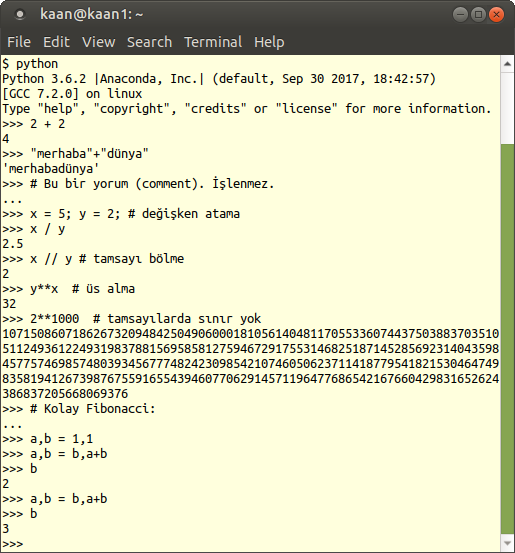
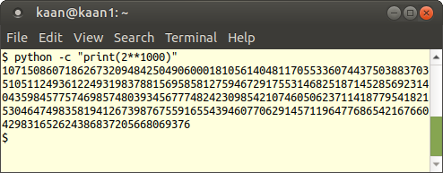
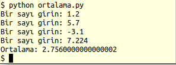
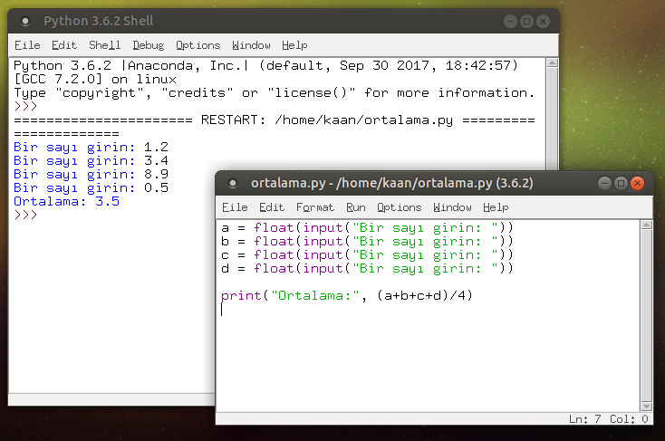
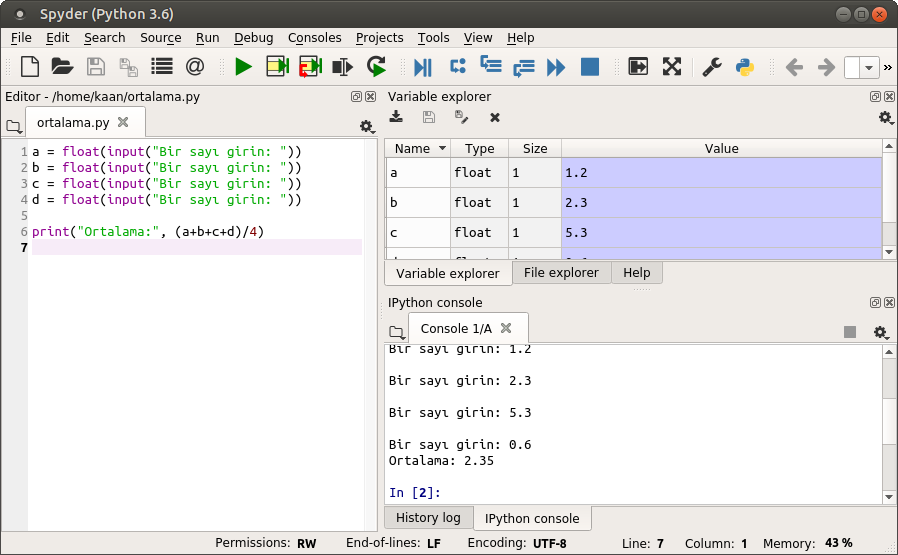

Python Programlamaya Giriş 1 - İlk adımlar
Bu yazıyla, yeni başlayanlara Python programlama dilini öğreten bir yazı dizisine başlıyoruz. İlk yazımızda Python’u kurma, etkileşimli olarak çalıştırma, basit bir Python programı (betiği) hazırlama, ve bir Jupyter defteri kullanma konularını açıklayacağız.
Yirmiüç bölümlük bu dizide Python’da program akış kontrolü, fonksiyonlar, dizeler, listeler, sözlükler, dosya okuma/yazma, hata yakalama, modüller, ve nesneye yönelik programlama konularını işleyeceğiz. Anlatımı çok temel bir seviyede tutacağımız için başka bir programlama dili bilmeniz gerekli değil. Nitekim Python, sözdiziminin sadeliği sebebiyle, programlamayı yeni öğrenenler için en uygun dillerden biri.
Kurulum
Python programlarını yazmak için gereken şeyler çok az: Sadece bir metin editörüne (text editor) ve Python yorumlayıcısına ihtiyacınız var. Metin editörü ile programı yazarsınız, ve yorumlayıcıya bu dosyayı okuyup çalıştırmasını söylersiniz. Hepsi bu.
Metin editörü olarak notepad, emacs, gedit gibi programlar kullanılabilir. Ancak Word, LibreOffice Writer gibi kelime işlemcileri kullanamazsınız. Bunlar yazıları kendilerine özgü bir biçimde saklarlar ve Python yorumlayıcısı bu dosyaları okuyamaz.
Python yorumlayıcısını Python resmi sayfasından indirip kolayca kurabilirsiniz. Her platformda (Windows, MacOS, Unix, Linux,…) çalışabilen bir Python derleyicisi vardır. Bir makinede yazdığınız bir Python programını, gerekli yorumlayıcının mevcut olduğu başka bir makinede, farklı bir işletim sistemi kullansa bile, çalıştırabilirsiniz.
Python yorumlayıcısı sisteminizde mevcut bile olabilir. Linux kullanıyorsanız zaten kuruludur çünkü birçok sistem programı Python kullanır. Ubuntu, Fedora vs gibi paket yönetim sistemi olan bir dağıtım kullanıyorsanız, paket yöneticisi aracılığıyla kurmanız daha iyi olabilir.
Bir editör ve yorumlayıcı, program yazmanız ve çalıştırmanız için yeterlidir. Gerisi teferruattır, ve başlangıç için şart değildir. Ama Python bazı geliştirme araçları size hız ve kolaylık sağlar. Söz gelişi IDLE, Spyder, PyCharm gibi bir IDE (bütünleşik geliştirme ortamı) kullanmayı tercih edebilirsiniz. Bunlardan daha sonra bahsedeceğiz.
Python kurmak için başka bir yol da Anaconda veya Canopy gibi Python dağıtımları. Bunların en büyük avantajı, ileri seviye kullanıcıların ihtiyaç duyduğu modüllerin, sürümleri birbiriyle uyumlu olacak şekilde seçilerek bir araya getirilmiş olmaları. Spyder, Jupyter Notebook gibi yazılımlar da bu dağıtımlarla geliyor. Tabii bu modülleri ayrı ayrı da kurabilirsiniz, mutlaka bu dağıtımlara bağlı olmaya ihtiyacınız yok.
Python 2.7 mi 3.x mi?
Kurulumda kullanacağınız paketi seçerken ilk karşınıza çıkacak soru Python 2.7 ile Python 3.6 (veya bu yazıyı okuduğunuz tarihe göre, 3.7, 3.8, vs.) arasında seçim yapmaktır.
Kısa cevap: En son sürümü seçin. Python’u yeni öğreniyorsanız Python 2.7’ye bakmayın bile.
Python 1990’dan 2000’e kadar yavaş yavaş gelişti. 2000’de Python 2.0 çıktı, ve ardından kullanımı yavaş yavaş yaygınlaştı. Bir süre sonra, tasarımındaki bazı eksikliklerin geriye doğru uyumlu kalarak düzeltilemeyeceği farkedildi. 2008 yılında Python 2.6 ile beraber, eskisiyle tamamen uyumlu olmayan Python 3.0 ilan edildi. Bundan sonra bir süre Python’un gelişimi iki daldan devam etti. 2009 yılında Python 2.7 ve Python 3.1 çıktı. Python 3 dalındaki bazı iyileştirmeler, uyumlu oldukları ölçüde, 2.7 dalına da aktarıldı. Ancak Python 2 dalının 2.7’de sonlandırılmasına karar verildi. Python Vakfı 2.7 sürümünü 2020’ye kadar destekleyeceğini, bu arada herkesin Python 3’e geçmesi gerektiğini ilan etti.
Yakın zamana kadar bazı önemli modüller sadece Python 2.7 ile çalıştığı için, birkaç yıl önce Python 2 ile Python 3 arasında karar vermek için biraz düşünmek gerekirdi. Artık öyle bir mesele yok. Basitçe, Python 2.7 geçmişte kaldı. Modern Python sadece 3.x ve üstü sürümlerdir.
Elinizde geçmişten kalma bazı Python 2.7 betikleri varsa, bunları Python’la beraber gelen 2to3 aracıyla Python 3.x sürümlerine uyumlu hale getirebilirsiniz.
Basit etkileşimli kullanım
Python’u işletim sisteminizin komut yorumlayıcısı ile (DOS command prompt veya shell/terminal) çalıştırıp etkileşimli olarak kullanabilirsiniz. Dolar ($) işareti komut yorumlayıcısının işareti. Aşağıdaki ekran görüntüsünde bazı örnekler görülüyor. >>> işareti Python’un bir komut beklediğini gösteriyor. Komutu yazdıktan sonra işlenmesi için Enter tuşuna basın.

Python etkileşimli halde çalışırken, bir ifadeyi yazıp Enter’a basmanız ifadenin değerinin ekrana yazılmasını sağlar. Meselâ “2+2” yazıp Enter’e bastığımızda “4” yazması sadece etkileşimli modda mümkün. Bir betiğin (programın) içinde “2+2” ifadesinin değeri hesaplanır, ama ekrana basılmaz. Betik içindeki bir ifadenin değerinin ekrana basılmasını istiyorsanız için print() fonksiyonunu kullanmalısınız.
Yorumlayıcıyı kapatmak için quit() yazabilir, ya da Ctrl-D (Linux) veya Ctrl-Z (Windows) tuşlarına basabilirsiniz.
Python’u sadece tek bir işlem için kullanacaksanız, etkileşimli oturum açmak yerine, komut satırında -c parametresi vererek de çalıştırabilirsiniz. Meselâ şöyle:

Program çalıştırma
Python programları, bir düz metin dosyasına yazılmış Python ifadelerinden ibarettir. Notepad, emacs, gedit gibi herhangi bir düz metin editörü açın ve aşağıdaki satırları yazın. Dosyayı ortalama.py ismiyle kaydedin.
a = float(input("Bir sayı girin: "))
b = float(input("Bir sayı girin: "))
c = float(input("Bir sayı girin: "))
d = float(input("Bir sayı girin: "))
print("Ortalama:", (a+b+c+d)/4)Komut terminalini açıp dosyayı kaydettiğiniz dizine geçin ve python ortalama.py yazıp Enter’a basın. (Windows’ta dosya ikonuna tıklamak yeterli olacaktır). Program çalışınca ayrı ayrı dört reel sayı yazıp Enter’a basın.

a = float(input("Bir sayı girin: ")) satırında, input() fonksiyonu ekrana Bir sayı girin: yazısını çıkarır ve siz klavyeyle bir şey yazana kadar bekler. Sizden aldığı cevabı bir “dize”, yani yazı olarak geri verir. Bu dizeyi aritmetik işlemde kullanabilmek için önce sayısal değere çevirmemiz gerekir. input() çağrısının etrafına sarılı `float() fonksiyonu bu işi yapar.
Bunu adım adım şöyle düşünebilirsiniz:
a = float(input("Bir sayı girin: "))
a = float("1.2")
a = 1.2Alternatif olarak, kodumuzu şöyle de yazabilirdik:
a = input("Bir sayı girin: ")
a = float(a)
b = input("Bir sayı girin: ")
b = float(b)
c = input("Bir sayı girin: ")
c = float(c)
d = input("Bir sayı girin: ")
d = float(d)
print("Ortalama:", (a+b+c+d)/4)Bütünleşik Geliştirme Ortamları (IDE)
Programlama için her ne kadar bir metin editörü yetse de, bir IDE’nin sağladığı kolaylıklar yabana atılamaz. Sözgelişi kod parçalarını renklendirerek okunurluğu artırmak, yazılan komutu otomatik tamamlayabilmek, çevrimiçi yardım belgelerine erişebilmek, bir çok dosya içeren yazılım projelerini organize edebilmek, hata ayıklayıcı ile editörü birleştirmek gibi imkânlar sağlarlar.
IDLE
IDLE, Python’la birlikte gelen basit ve minimal bir IDE’dir. Çok fazla bir imkân sağlamasa da, hafifliği ve her yerde bulunabilirliği sebebiyle varlığının farkında olmakta fayda var.
IDLE’ı çalıştırdığınızda, önce Python yorumlayıcısını etkileşimli kullanabileceğiniz bir pencere çıkar. File menüsünden New file seçerek bir editör penceresi açılabilir, veya Open… seçerek editöre mevcut bir dosya yüklenebilir. Editördeki Python programı, F5 tuşuna basarak yorumlayıcı penceresinde çalıştırılabilir.
Spyder
IDLE’yi kullandıkça bir çok amaç için yetersiz kaldığını göreceksiniz. Daha güçlü bir IDE olarak Spyder’ı tavsiye ederim. Spyder’da tek bir pencere içinde editör, komut penceresi, dizin ağacı, değişken listesi, ve çevrimiçi yardım bulunabilir.

Jupyter Notebook
Etkileşimli hesaplamada başka bir yaklaşım kodu “defter” denilen biçimde düzenlemektir. Jupyter notebook kullandığınızda komutlar “hücreler” ile organize edilir. Her hücre çalıştırıldığında, hücredeki komutlar defterin bağlı olduğu “çekirdeğe” (yorumlayıcıya) gönderilir, geri gelen cevaplar hücrenin altına yazılır. Bu şekilde bir dizi işlemin çıktısını kaydeden bir rapor hazırlamak mümkün olur. Bir Jupyter defterinde yazı, kod, şekil, formül, HTML elemanları bir arada bulunabilir.
Bu yazı ve birçok başka yazımız Jupyter defteri olarak hazırlandı, nbconvert aracıyla HTML’ye çevrilerek doğrudan blogumuza aktarıldı.
Bir Jupyter defteri HTML ve JavaScript teknolojileri ile hazırlanmıştır. Tarayıcınızda çalışır, ama kullanmak için internet bağlantısına ihtiyacınız olmaz.
Jupyter defterleriyle ilgili daha ayrıntılı bilgiyi diğer yazılarımızda bulabilirsiniz. Temel bir başlangıç için Jupyter Notebook Nedir yazımıza bakabilirsiniz.
Alıştırmalar
Python’a ısınmak için küçük işler yaparak işe başlayabilirsiniz.
Python yorumlayıcısını etkileşimli kullanarak aşağıdaki değerleri hesaplayın. \[\frac{1}{2} + \frac{1}{4} + \frac{1}{8} + \frac{1}{16}\] \[(2.1^3 - 4.7^{-4.3}) / (2.5^{0.5} + 10^{0.25})\] \[x=1,2,3 \ \mathrm{için}\ x^3 - 3x^2 + 5x -1\]
Aritmetik ortalama alma programına ekleme yapın: Program girilen sayıların standart sapmasını, geometrik ortalamasını ve harmonik ortalamasını hesaplayıp ekrana yazsın. Karekök almak için \(\sqrt{x} = x^{0.5}\) denkliğini kullanabilirsiniz.